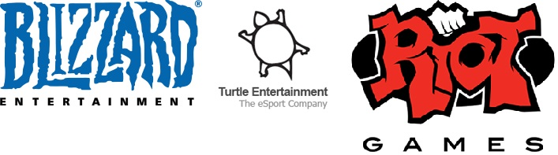
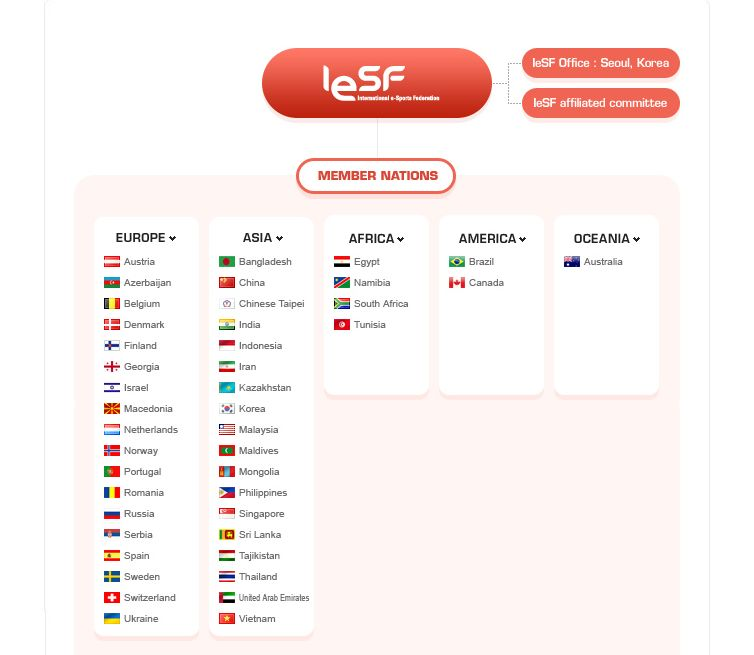
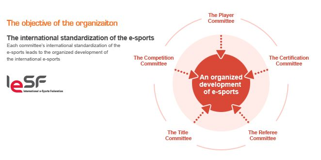
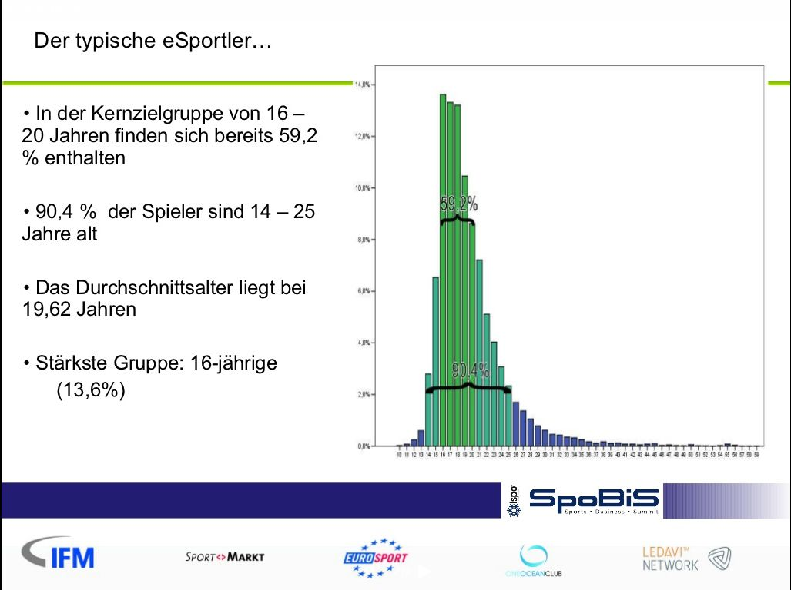
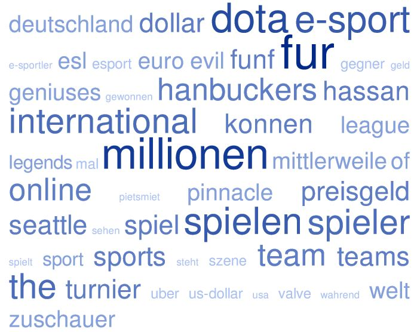
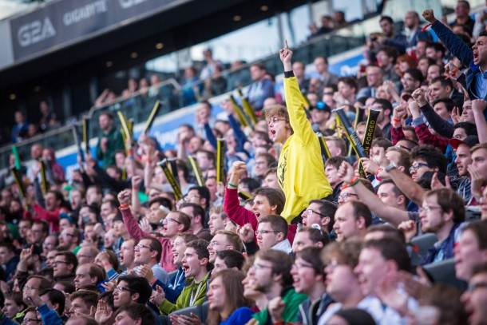
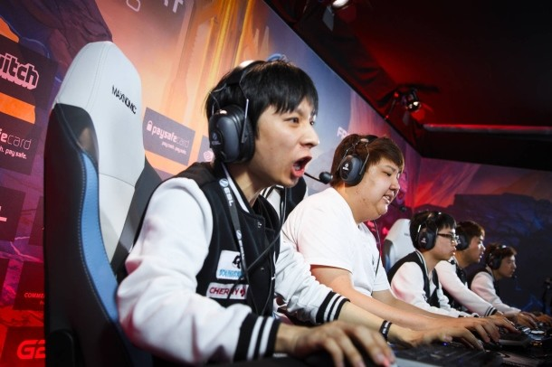
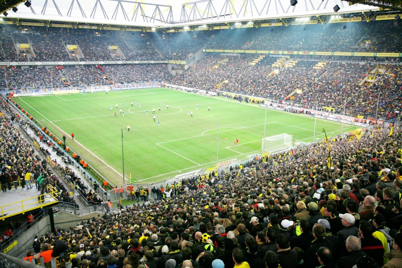
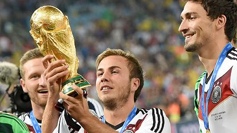
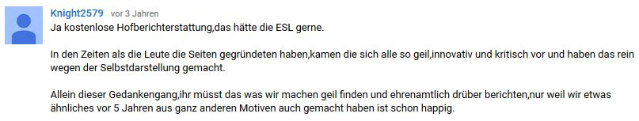

Wirschaft und Medien
4.1 Wirtschaft und E-Sport
Nachdem die Mikroebene skizziert wurde, soll es nun um die Mesoebene im E-Sport gehen. Hier werde ich insbesondere auf zwei Bereiche eingehen: die Industrie, die hinter E-Sport steht und die Rolle der Medien - insbesondere unter Berücksichtigung ihrer Funktion als Informations- und Bekanntmachungskanal.
Folgende Forschungsfragen sollen hierbei im Fokus stehen:
Wirtschaft und E-Sport
3a) Welche Organisationsstrukturen haben Teams, Ligen und Verbände?
3b) Wer investiert in E-Sport und wie sieht das Sponsoring im E-Sport-Bereich genau aus?
3c) Wie lässt sich E-Sport vermarkten?
3d) Welchen Einfluss haben die Fans auf den wirtschaftlichen Erfolg von E-Sportlern und der E-Sport-Szene im Allgemeinen?
Medien und E-Sport
3e) Wie wird in deutschen Leitmedien über E-Sport berichtet?
3f) Wie sieht die E-Sport-Presse aus?
3a) Welche Organisationsstrukturen haben Teams, Ligen und Verbände?
Zu Beginn dieses Kapitels werden die Organisationsstrukturen von Teams, Ligen und Verbänden im E-Sport vorgestellt. Wie bereits erwähnt, sind die Strukturen innerhalb der E-Sport-Szene undurchsichtig. Eine genauere Beschreibung soll zu einem besseren Verständis führen und Licht ins Dunkle bringen. Hier werde ich mich insbesondere auf die Dissertation von Breuer beziehen, der in seiner Arbeit eine Markt- und ordnungsökonomische Analayse von E-Sport (2011) vorgenommen hat.
4.1.1 Teams
Teams

Team Online Kingdom
An dieser Stelle soll es um die genaue Organisationsstruktur von E-Sport-Teams gehen. Im E-Sport ist ein Team ein Zusammenschluss aus mehreren Spielern oder einer virtuellen Spielgemeinschaft. Die virtuelle Spielgemeinschaft zeichnet sich durch intersubjektiv geteilte Wissens- und Erfahrungsbestände aus (Marotzki, 2002: 50 zitiert nach Fritz, 2008: 135). Als "virtuell" verstehe ich eine Gruppierung von Spielern, die durch einen computervermittelten Austausch von Informationen miteinander kommuniziert. Gegründet wird ein Team meist zunächst von einzelnen Spielern, die sich zu einem Team zusammenschließen. Teams sind somit auf der kleinsten Instanz, die einfachste Organisationsstruktur von Spielern. Hier bilden sich nicht nur Spielerhierarchien aus - beispielsweise, dass es eine Art Mannschaftskapitän gibt (vgl. Clinton's Rolle in seinem Team Online Kingdom) - sondern auch soziale Netzwerke (vgl. Breuer 2011: 19). Ab welchem Punkt ein Team als Team zu bezeichnen ist, ist innerhalb der Forschung und auch dem E-Sport umstritten. Breuer bezieht sich hier auf die Einteilung von Wenzler (2003). Demnach gäbe es drei Gruppen von Teams:
1.) Fun-Teams-> Spielspaß und reine Interaktion im Vordergrund
2.) Semi-professionelle Teams -> Spielspaß im Vordergrund, aber auch Teilnahme an Wettberwerben
3.) Pro-Gamer-Teams -> Erfolg im Spiel durch wettbewerblichen Vergleich zu anderen Personen und Gruppierungen im Vordergrund (vgl. Breuer 2011: 20).
Der Deutsche eSport-Bund (esb) wiederum verstand nur solche Mannschaften als Team, die gemeinsam an Turnieren und Wettkämpfen teilnehmen. Per dieser Definition, würden Fun-Teams also aus dieser Definition herausfallen.
Derzeit gibt es noch keine festen Vorgaben, nach denen ein Team aufgebaut ist oder sein sollte. Dennoch lassen sich zwei Formen von Teamstrukturen ausmachen. Die eine lässt sich eher als "professionell" bezeichnen, die andere als eher "traditionell". Bei der professionellen Struktur steht das Management an der Spitze des Teams. In der Dokumenation Free to Play wurden einige Teams vorgestellt, die einen eigenes Management hatten. So zum Beispiel insbesondere die asiatischen Teams. Das Management ist dabei für die Verwaltung und strategische Zielsetzung des Teams zuständig. Neben dem Mangagement gibt es auch immer einen Teammanager. Er vermittelt zwischen Management und Spielern. Die Spieler sind Mitglieder des Teams und damit kleinste Einheit innerhalb dieses Gefüges.
Teams, die eher traditionell aufgebaut sind, haben kein Management an der Spitze, sondern einen Teamführer, der meist der Gründer oder ein ehemaliger Spieler des Teams ist. Neben diesem Teamführer gibt es auch noch einen Mitanführer, der den Teamführer bei Abwesenheit vertritt. Er ist sozusagen der stellvertretende Geschäftsführer. Auch bei dieser Struktur gibt es einen Teammanager, der noch aktiv am Spielbetrieb teilnimmt und zwischen Teamführung und Spieler vermittelt. Seine Position ist mit der eines Fussball-Kapitäns vergleichbar (vgl. Trixie Ben: 2014: 27).
Teams, die einen rein professionellen Anspruch an sich haben, sind auf Sponsorenverträge und Preisgelder aus Turniersiegen angewiesen. Sponsorenverträge beeinflussen meist auch die Namensgebung des Teams. So kann es passieren, dass Teams einem Unternehmen angehören (im Sport auch als Werksteam bezeichnet) und die Unternehmensführung Einfluss auf die sportlichen Belange des Teams hat. Beispiele hierfür sind beispielsweise die koreanischen Teams Samsung Galaxy und SK Telecom T1. Spieler, die einem professionellen Team angehören, stehen zudem meist in einem vertragsgebundenen Verhältnis.
Mittlerweile gibt es Teams, die durch ihren immensen Erfolg zu einem eigenen Unternehmen avanciert sind. In diesem Fall spircht man von Clan. Dieser ist ein Zusammenschluss mehrerer Teams. Ein Beispiel hierfür ist der Clan SK Gaming. SK Gaming wurde 1997 in Oberhausen gegründet. Damals noch unter dem Namen Schröt Kommando. Heute ist SK Gaming so groß, dass es mehrere Teams im Computer- und Konsolenspielbereich unter sich vereint (unter anderem: LoL, Hearthstone, Counter Strike: Global Offensive).
Was die Bezahlung anbelangt, so gibt es derzeit noch keine feste Einkommensstruktur im E-Sport. Teams und ProGamer sind von dem Gewinn aus Preisgeldern abhängig. Einer der eroglreichsten deutschen ProGamer Kai Hanbückers sagte zu diesem Thema in einem Zeit-Interview: "Die Teams zahlen Gehalt, aber man muss das auf die Stunden hochrechnen, die ein Spieler mit dem Spiel verbringt. Das lässt sich nicht vergleichen mit einer 40-Stunden-Arbeitswoche. Du spielst bestimmt sechs Tage die Woche, und in den Wochen vor dem International wächst das schnell auf zwölf Stunden pro Tag. Ein Grundgehalt von vielleicht 3.000 Euro vor Steuern ist in diesem Fall nicht sehr hoch. Es muss deutlich höher sein, da man diesen Beruf nur für eine bestimmte Zeit ausführen kann." Er gibt weiter zu Protokoll, dass sich die Gehaltsstrukturen von ProGamern in den letzten Jahren zwar verbessert hätten, diese dennoch noch mehr gefördert werden müssten, um wirklich den bestmöglichen Sport zu ermöglichen.
E-Sport-Teams müssen demnach weiter daran arbeiten, eine feste Organisations- und Finanzstruktur zu entwickeln, um die zunehmenden Professionalisierung von E-Sport voranzutreiben. Umso mehr Struktur und Reglements in den Bereich gebracht wird, umso eher wird es E-Sport gelingen, als ernstzunnehmende Sportart annerkannt zu werden.
4.1.2 Turniere und Ligen
E-Sport Wettkämpfe: Turniere und Ligen
In Europa gibt es kaum eine Sportart, die nicht über Verbände organisiert ist. Im E-Sport allerdings, gibt es keinen übergeordneten Dachverband, wie beispielsweise im Fussball den DFB. Professionelle Ligen im E-Sport agieren außerdem weitgehend autonom von Verbänden (vgl. Breuer 2011: 21). Eine erste, zweite oder dritte, regional oder kleinere Liga, wie es sie im Fussball, Handball oder Basketball gibt, lässt sich im E-Sport nicht finden. Eine große Rolle spielen im E-Sport vielmehr die Veranstalter: "Im professionellen elektronischen Sport mit seiner ausgeprägten Markt- und Medienorientierung treten im Gegensatz zum europäischen Modell des klassischen Sports durchgängig Veranstalter, die als Kapitalgesellschaften agieren und somit gewinnmaximierend arbeiten, auf, " (vgl. ebd. 2011: 21). Breuer kategorisiert die Veranstalter an Hand verschiedener Ausprägungen wie folgt:
- der regionale Fokus der Veranstalter
Zum diesem Punkt sei anzumerken, dass Breuer darauf hinweist, dass im Falle reiner Online-Wettbewerbe, ohne die Durchführung von Präsenzveranstaltungen, prinzipiell die Möglichkeit der globalen Ausrichtung gegeben wäre (vgl. ebd. 2011: 23). In der Praxis ist die aber nicht wirklich der Fall, da die Profi-Ligen fast ausschließlich nur Präsenzveranstaltungen abhalten. Stattdessen finden Turniere bestimmter Anbieter auf erster Ebene in regionalen Vorausscheidungen statt, die in diversen Ländern ausgetragen werden. Erst die Finali werden dann zentralisiert in nur einem Land ausgeführt. Turtle Entertainment bespielsweise, ist eine deutsche GmbH, die nur im E-Sport-Bereich tätig ist. Sie ist gleichzeitig der Veranstalter der größten europäischen E-Sport-Liga: Electronic Sports League (ESL). Dabei verfolgt Turtle Entertainment die Strategie von nationalen Teilmärkten, bei der - wie gerade angesprochen - in jedem Land eigene Turniere ausgetragen werden (vgl. Breuer 2011: 22).
- die Fokussierung auf bestimmte Genres bzw. Spiele
Andere Anbieter spezialisieren sich entweder auf ein bestimmtes Spiel oder offerieren ein breiteres Spektrum an Spielen.
- die mögliche Fokussierung auf einzelne Systeme
Unter "einzelne Systeme" versteht Breuer technischen Ausgangspunkte, auf denen ein Spiel basiert (vgl ebd. 2011: 23). Gemeint ist damit auf der einen Seite der PC, auf der anderen Seite die Spielekonsole. In Deutschland liegt der Fokus beispielsweise viel mehr auf Systemen, die über den PC laufen. In Amerika wiederum gibt es auch diverse Spieleligen, die sich auf Konsolenspiele fokussieren.
- die Abhängigkeit von einem einzelnen Hersteller
Quasi bei jeder professionell ausgerichteten Liga, lassen sich verschiedene Unternehmen aus der Industrie finden, die als Sponsoren fungieren. Diese kommen immer noch größtenteils aus der Spielebranche selbst. Einer der größten Spielehersteller ist dabei beispielsweise Riot Games. Hierbei handelt es sich um ein US-amerikanisches Computerspiel-Entwicklungsspielunternehmen. Riot Games ist der Schöpfer von League of Legends. Neben Blizzard- und Turtle Entertainment gehört Riot Games nicht nur zu den erfolgreichsten Herstellern in der E-Sport-Szene, sondern auch zu den größten Veranstaltern und Sponsoren.
An dieser Stelle zeigt sich, dass Unklarheiten über die Organisationsstruktur von Ligen, Veranstaltern und Sponsoren daher rühren, dass diese zum einen sehr eng miteinander verwoben sind, zum anderen aber auch ein und dieselbe Instanz sein können. So ist beispielsweise Riot Games nicht nur der Herstellter von LoL, sondern gleichzeitig auch Organisator der LoL-Liga und Sponsor von großen E-Sport-Turnieren.

4.1.3 Verbände/Interessenvertretungen
Es gibt sowohl nationale als auch internationale Verbände im E-Sport-Sektor. Dabei liegt das Hauptziel dieser in der Förderung von E-Sport. Im Folgenden werde ich einen nationalen und einen internationalen Verband vorstellen. Zum einen handelt es sich um den Deutschen eSport Verband (DeSpV), zum anderen um die International eSport Federation (IeSF).
Deutscher eSport Verband
Gegründet wurde der Verband im Jahr 2004 als eingetragener Verein. In einem Interview (aus dem Jahr 2006) mit dem ehemaligen Geschäftsführer Frank Sliwka, gibt dieser folgende Zielsetzungen für den DeSpV an: "Der Deutsche eSport Verband (DeSPv) arbeitet daran, die Grundlagen für Gespräche mit dem Deutschen Sport-Bund (DSB) zu schaffen. Der DSB entscheidet über die Anerkennung als Sportart. Wenn der eSport als offizielle Sport anerkannt wird, ist die Anerkennung in Politik, Wirtschaft und Öffentlichkeit stärker. [...] Der DeSPv versteht sich als die unabhängige Instituation der eSport-Community in Deutschland. Der DeSPv vertritt dabei sowohl die Spieler und Teams als auch die beteiligten Ligen gleichermaßen." Sliwka betont immer wieder, dass sich der Verband als Plattform für den deutschen E-Sport verstehe und insbesondere den Dialog zwischen E-Sport, Wirtschaft, Politik und Medien fördern wolle. Haupzielsetzung sei dabei, sich mit der Zukunft des "freizeit- und wettkampforientierten eSports in Deutschland zu befassen und feste Strukturen zu schaffen". Darüberhinaus ginge es primär auch um die Anerkennung von E-Sport als Sportart. Sliwka gibt an, dass dieses Ziel nur erreicht werden können, wenn man vorab feste Strukturen - zum Beispiel in Bezug auf Mitgliederanzahl, Regelwerk oder Meisterschaften - etabliere.
Nun ist es so, dass der Verein seit 2011 inaktiv ist. Die oben angeführten Ziele konnten dementsprechend nie umgesetzt werden. Zu den Gründen, warum genau der DeSpV seine Arbeit niedergelegt hat, findet man im Netz keine Informationen. Lediglich bei Wikipedia wird mit einem Satz erwähnt, dass der Verein derzeit brach liegt. Sucht man gezielt nach dem Verein, erscheinen etliche Artikel zu der Gründung des Vereins, nichts aber zu dem aktuellen Verbleib. Eine offizielle Website ist nicht mehr erreichbar. Die "neuesten" Informationen stammen aus dem Jahr 2010. In dem Online-Magazin readmore wird unter dem Titel Totgesagte leben länger. Der Deutsche eSport Bund meldet sich zurück über die Entwicklung des Vereins berichtet: "Seitdem sich Frank Sliwka vor mehr als einem Jahr als Geschäftsführer des ESB zurückzog, war es ruhig um den ESB geworden. Das Projekt lief nicht so, wie man es sich erwartet hatte und die Umstrukturierungen der Vergangenheit brachten nicht den gewünschten Effekt. Mit einem Neuanfang soll nun alles anders, soll alles besser werden." In der Presseerklärung benannte Thomas von Treichel, neuer erster Vorstand, auch gleich ein großes Manko: Die Öffentlichkeitsarbeit. Man wisse, "dass es früher nach außen oft aussah, als würde wenig passieren" heißt es, doch man "wolle dies ändern". Breuer stellt schon vor der Inaktivität des Verbandes fest, dass der DeSpV zwar als Kommunikationsplattform tätig sei, jedoch abseits dieser Funktion nur über einen geringen Einfluss verfüge (vgl. Breuer 2011: 25). In seiner Arbeit findet er klare Worte zum Verbleib des Vereins: "Ohne eine abschließende Wertung abgeben zu wollen, kann an dieser Stelle gesagt werden, dass der Bund von echtem Einfluss auf Spieler wie auch Veranstalter offensichtlich weit entfernt ist" (ebd. 2011: 25). Aufgrund der oben angeführten Entwicklungen gibt es derzeit also keinen E-Sport-Verband, der den deutschen E-Sport repräsentiert und seine Interessen vertritt.
International eSport Federation
Die IeSF wurde im Jahr 2008 in Busan, Sükorea, gegründet. Gründungsmitglieder waren zu diesem Zeitpunkt neun nationale E-Sport-Verbände (Belgien, Dänemark, Deutschland, Niederlande, Österreich, Schweiz, Südkorea, Taiwan und Vietnam). Ähnlich der nationalen Verbände, geht es auch der IeSF um die Verbreitung und Anerkennung von E-Sport, sowie um die Einführung von Reglements - dabei aber spezifisch kulturübergreifend. Seit ihrer Gründung werden auch Turniere im Namen der IeSF ausgetragen (Bsp.: IeSF 2013 World Championship). Mittlerweile setzt sich die Federation aus 43 Mitgliedstaaten zusammen. Durch die Inaktivität des deutschen E-Sport Verbandes, schied Deutschland als Mitgliedstaat wieder aus.
Hier eine Übersicht über die aktuellen Mitgliedstaaten und die Struktur des Verbandes:

Im Gegensatz zum deutschen E-Sport Verband hat die IeSF den Sprung von einer marginalen Plattform für E-Sport, zu einem großen Interessenverband geschafft. Ziele für die kommenden Jahre sind laut der offiziellen Homepage zum einen Standards für Schiedsrichter, Spieler, Zertifikate, Titel und Wettbewerbe einzuführen. Zum anderen Internationale E-Sport-Turniere auf die Beine zu stellen und die Anzahl der Mitgliedstaaten innerhalb der IeSF weiter zu erhöhen.
4.2 Sponsoring im E-Sport
3b) Wer investiert in E-Sport und wie sieht das Sponsoring im E-Sport-Bereich genau aus?
Damit die gesamt E-Sport-Industrie wachsen und an Professionalisierung gewinnen kann, muss ein entscheidender Faktor gegeben sein: genügend Kapital. E-Sport finanziert sich derzeit hauptsächlich über Sponsoren. Nur durch Eintrittsgelder und Teilnahmegebühren könnte der Sektor nicht bestehen, da die Spiele, die im E-Sport-Bereich gespielt werden, alle kostenlos erhältlich sind. Über den Konsumenten alleine finanziert sich die Branche demnach (noch) nicht (auf diesen Aspekt werde ich bei Forschungsfrage 3d genauer eingehen).
Unter Sponsoring wird eine dynamische, dreiteilige Beziehung zwischen Produkt, Käufer und Sponsor verstanden. Sponsoring nutzt dabei die emotionale Verbindung zwischen Produkt und Zielgruppe und wandelt diese Verbindung in ein lukratives Geschäft für Sponsoren um (Quelle:sponsormap). Nach Bruhn seien zudem der Fördergedanke, das Kommunikationsziel, das Zugrundelegen eines systematischen Planungs- und Entscheidungsprozesses, der Transfer eines bestimmten Images sowie die integrierte Unternehmenskommunikation von hoher Bedeutung (vgl Bruhner 2003: 6-8).
Sponsoring im E-Sport sieht nun wie folgt aus: Teams werden nicht nur von Unternehmen aufgestellt, sondern ebenfalls von diesen gesponsert. Auch große Turniere werden aus der Tasche von großen Sponsoren bezahlt. Dabei erkennen immer mehr Großkonzerne das Potential im und von E-Sport. Noch Anfang 2014 veröffentlichte kicker.de einen Artikel zum Sponsoring im E-Sport. Hier wurde darauf verwiesen, dass sich bisher fast ausschließlich Hardware-Hersteller und Online-Händler an der Vermarktung und dem Sponsoring von E-Sport-Teams versuchten. Innerhalb von eineinhalb Jahren hat sich dieser Zustand allerding geändert. Mittlerweile haben sich auch andere Großkonzerne, wie Coca Cola, Monster Energy und Amazon dazu entschieden, in die Computerspiel- und E-Sport-Branche mit einzusteigen.
Monster Energy (Energydrink-Hersteller) beispielsweise fasste im Juli 2015 den Entschluss, das E-Sport-Team fnatic zu sponsern. Mittlerweile hat das Team drei Sponsoren auf seiner Seite. Marketing Manager bei Monster Energy Matt Simpson sagte zu dem Deal: "We at Monster Energy are stoked about the addition of Fnatic to our ranks as they continue their long tradition of competing at the highest level of esports. With their focus on the community and top tier teams, Fnatic has garnered a massive following all over the world. We look forward to supporting them now and in the coming years". Unterstützen Unternehmen ganze Clans, geht es meist nicht darum, eine bestimmte Summe an Geld zu Verfügung zu stellen. Vielmehr statten die Sponsoren ihre Teams mit Equipment aus - insbesondere Hard- und Software, Bekleidung. Gesponsert werden weiterhin auch Homepages (vgl. Breuer 2011: 130).
4.3 Vermarktung E-Sport
3c) Wie lässt sich E-Sport vermarkten?
An dieser Stelle soll es nicht darum gehen, eine umfassende wirtschaftswissenschaftliche Analyse sowie Einschätzung zur Vermarktung von E-Sport abzugeben. Dennoch soll vorab eine kurze Bestandsaufnahme erfolgen, da der E-Sport-Markt im Allgemeinen zum einen bereits aus anderen Märkten bekannte, traditionelle Strukturen aufweist, zum anderen allerdings auch neuartige aufweist: "Beim eSport-Markt handelt es sich um einen neuen Markt, der Besonderheiten des traditionellen Sportmarktes, typische Merkmale von jugendlichen Subkulturen sowie Entwicklungstendenzen einer neuartigen Mediennutzung (die sich in den vergangenen Jahren im Zuge des technologischen Fortschritts entwickelte und ihren Niederschlag z.B. im Internet oder bei Computerspielen findet) in sich vereint" (Sauer 2004: 16).
Ähnlich wie die undurchsichtige Struktur von Ligen, Turnieren und Verbänden, gestaltet sich auch die Marktbestimmung von E-Sport schwierig. Der E-Sport-Markt selber dröselt sich nämlich in zahlreiche Untermärkte (zb. E-Sportler-, Zuschauer- und Rechtemärkte) sowie Teilmärkte (z.B. Strategie- und Actionspiele, die jeweils selber noch weiter zu segmentieren sind) auf (vgl. ebd. 2004: 17). Weiter hat ebenso das verworrene Bild auf Hersteller, Veranstalter und Sponsoren (Unternehmen füllen mehrere Funktionen gleichzeitig aus) Einfluss auf dem E-Sport-Markt. Sauer sieht diesen Umstand als nicht unproblematisch: "Als Besonderheit im eSport ist weiterhin anzumerken, dass einige bedeutende Marktteilnehmer dabei eine eigene Nachfrage nach ihren Produkten generieren, indem sie (sportuntypisch und in gewisser Weise gefährlich für den eSport) Anbieter auf mehreren Stufen der Wertschöpfungskette sind („vertikale Integration“)" (ebd. 2004: 17). Eine weitere Besonderheit im E-Sport-Markt liegt in der Kürze der Spiellebenszyklen. Im Gegensatz zum traditionellen Sport, der in der Regel bis auf geringfügige Regeländerungen grundsätzlich unverändert bleibt, gibt es im Bereich von E-Sport regelmäßig durch neue, für E-Sport angepasste Software, einen extrem kurzen (wenn auch im Vergleich zu normalen Computerspielen ungewöhnlich langen) Produktlebenszyklus (vgl. ebd. 2004: 18). Nach Sauer ergebe sich aus diesem Umstand ein Interessenskonflikt. Die Unterhaltungssoftwareindustrie sei nämlich genau an dieser Kurzlebigkeit interessiert, um immer wieder neue Produkte auf den Markt bringen zu können. E-Sportler hingegen seien an einem langen Produktionszyklus interessiert, um ihre Spiel-Fähigkeiten nicht ständig aufs Neue anpassen und neu erlernen zu müssen (vgl. ebd. 2004: 18).
Unter Berücksichtigung all dieser angesprochenen Aspekte, wie lässt sich E-Sport nun vermarkten? Auf dem Blog eSport Marketing informiert die ENPE Media GmbH über die Konzeption, Durchführung und Betreuung von Events und Marketingkampagnen im E-Sport- und Gaming-Segment. Für meine Recherche habe ich ein Telefoninterview mit Christian Kresse geführt, der die ENPE Media GmbH gemeinsam mit einem Freund gegründet hat. In dem Interview haben wir beispielsweise über den Wachstum der E-Sport-Szene gesprochen, was Gründe dafür sein könnten und darüber, ob sich der Markt eher national oder global ausrichtet.
Foto: Christian Kresse
Interview mit Christian Kresse
-
Download Ton komplett_kress_compressed_16kbps.mp3
Ton komplett_kress_compressed_16kbps.mp3 Details
- Sunday, 10 January 2016 [1.3MB]
4.3 Vermarktung E-Sport
Abseits des Gespräches hat mir Kresse noch 5 Gründe genannt, die seiner Meinung nach dafür sprechen, in E-Sport zu investieren:
1.) Reichweitenkennzahlen
Hier verweist er beispielsweise auf das Spiel League of Legends, das weltweit circa 67 Millionen angemeldete Spieler, von denen täglich 27 Millionen aktiv spielen, vorweisen kann. Zur besten Zeit sind bis zu 7,5 Millionen Spieler gleichzeitig online. Diese hohen Werte schlagen sich auch in den Zuschauerkennzahlen nieder. So konnte die League of Legends Weltmeisterschaft im Jahr 2013 rund 32 Millionen Zuschauer verbuchen. Allerdings weisen die meisten großen E-Sport-Turniere Zuschauerzahlen in Millionenhöhe auf. Auf der diejährigen ESL One Cologne schauten weltweit 27 Millionen Zuschauer zu, als die Counter Strike: Global Offensive Weltmeisterschaft ausgetragen wurde.
2.) E-Sportler als reichweitenstarke Influencer
"Ebenso wie bei den klassischen Sportarten erfreuen sich Profispieler, aber auch Moderatoren und andere Szene-Persönlichkeiten, großer Beliebtheit bei den Fans und stellen somit reichweitenstarke und authentische Multiplikatoren und Influencer dar. Ihre Reichweite erhalten die Protagonisten neben ihren regelmäßigen Auftritten auf dem virtuellen Spielfeld durch ihre Präsenz auf den sozialen Netzwerken wie facebook, twitter, Instagram und Co. (Quelle: eSport Marketing_Kresse)".
3.) Global Players haben den Trend bereits erkannt
Unter Punkt drei verweist Kresse auf das bereits angesprochene neuere Interesse von Großkonzernen, die fernab der IT-Branche operieren, in E-Sport zu investieren. Hier wird insbesondere auf Red Bull eingegangen. Der Energydrink-Hersteller betreibt nämlich schon seit einigen Jahren eigene Events und Turniere im E-Sport-Bereich (Red Bull Battlegounds, Red Bull Wings Academy).
4.) E-Sport-Events füllen ganze Stadien
Obwohl E-Sport immer noch hauptsächlich online stattfindet, werden größere Turniere - hauptsächlich Finali von Meisterschaften - mehr und mehr in großen Stadien ausgetragen. Die Zuschauerzahlen steigen dabei stetig: "Während es 2014 nur 12.500 Zuschauer ins Stadion des Fußballbundesligisten [Commerzbank-Arena nach Frankfurt] schafften, waren es in diesem Jahr schon 15.000. Noch beeindruckender ist der Anstieg der Streaming-Zahlen: Von 500.000 durchschnittlichen Online-Zuschauern 2014 stieg die Anzahl auf über eine Million Dota 2 Fans, die das Event gleichzeitig live im Internet verfolgten." In anderen Ländern sind die Zahlen sogar noch um einiges höher. Im vergangenen Jahr sahen das Finale der LOL-Weltmeisterschaft in Sangam Stadium in Seoul rund 40.000 Zuschauer.
5. E-Sport ist ein aufstrebender Markt
Hier verweisen Kress und sein Partner auf die Prognosen des Marktforschungsinstituts Newzoo, das gezielt Marktforschung im Gaming-Bereich betreibt. Laut aktueller Erhebungen, würden mittlerweile 40% der an E-Sport-Interessierten nicht (nur) aktiv selber Computerspiele spielen, sondern Wettkämpfe und Turniere via IPTV- oder anderen Livestream-Angebote verfolgen. Dies sieht Kresse als Indiz dafür, dass E-Sport sich zu einem sogenannten "Zuschauersport" entwickeln könnte.

Zusammenfassung
Insgesamt kann man sagen, dass sich der E-Sport-Markt durch eine hohe Dynamik innerhalb des Marktes auszeichnet, was nicht zuletzt daran liegt, dass der Markt - wie schon von Sauer beschrieben - insbesondere durch eine neuartige Mediennutzung geprägt wird. Das Internet lebt von Schnelllebigkeit und einem ständigen Wechsel von neuen Strategien und technologischen Neuerungen. E-Sport wiederum, ist im virtuellen Raum entstanden und findet größtenteils im Internet statt (außgenommen offline-Turniere); so auch die Vermarktung von E-Sport. Der E-Sport-Markt ist diesen ständigen Veränderungen ebenfalls unterworfen und muss sich diesen anpassen.
4.4 Fans und wirtschaftlicher Erfolg
3d) Welchen Einfluss haben die Fans auf den wirtschaftlichen Erfolg von E-Sportlern und der E-Sport-Szene im Allgemeinen?
Zuvor ging es primär um Unternehmen, die in der E-Sport-Branche Sponsoring oder Marketing betreiben und für ihre Marke Werbung machen. Gesondert erwähnt werden sollten allerdings die monetären Mittel, die im E-Sport durch Fans generiert werden. Tatsächlich nimmt die Community nicht nur durch ihr rege Teilnahme an Computerspielen, Turnieren, Fanforen und anderen E-Sportbezogenen Aktivitäten an der E-Sport-Szene Teil, sondern finanziert diese mittlerweile auch in einem nicht unerheblichen Maße mit.
Ein reales Beispiel: Wie schon in anderen Kapiteln erwähnt, organisiert der Dota 2-Hersteller Valve jährlich das Turnier The International. Im Jahr 2013 ermöglichte Valve den Fans erstmals, ihren Teil zur Vergrößerung des Events beizutragen, indem das so genannten Kompendium eingeführt wurde. Das Kompendium kann man als eine Art interaktives Handbuch mit Sammelfunktion verstehen. Da viele Dota-2-Fans Turniere nicht live vor Ort mitverfolgen können, bietet der Entwickler Valve auf seiner Website das Kompendium an (für 9,99 US-Dollar. Eine erweiterte Version, die noch mehr Features liefert, gibt es für 29.99 US-Dollar). Mit dem Kompendium können Fans während des Turniers Vorhersagen treffen, Spielerkarten sammeln und tauschen, an Community-Umfragen teilnehmen, diverse Details zu Spielern erfahren und vieles mehr. Dabei können Kompendium-Besitzer weitere Optionen freischalten, Punkte sammeln und sich am Ende des Events mit anderen Fans aus dem ganzen Globus vergleichen. Der große Nebeneffekt des Kaufes: Ein Viertel des Gewinns durch den Verkauf des Kompendiums wird dem Preispool des Turnieres beigefügt. Diese Crowdfunding-Aktion generiete im Jahr 2013 insgesamt über vier Millionen US-Dollar, das Preisgeld stieg dadurch auf 2,8 Millionen Dollar an. Insgesamt waren demnach 1,6 Millionen US Dollar des Preispools der Community zu verdanken. Noch mehr gesponsert haben die Fans in diesem Jahr: Ursprünglich hatte Valve für das diesjährige The International nämlich "nur" 1,6 Millionen Dollar ausgeschrieben. Durch den Erlös der digitalen Gegenstände, die Dota-2-Spieler zuvor wieder käuflich erwerben konnten, wurde der Preistopf um das zehnfache erhöht, nämlich auf 18,4 Millionen US-Dollar.

Ein weiteres E-Sport-Projekt, das von der Community gestützt wurde, ist das der Dota 2-Kommentatoren GodZ und LD. Die Moderatoren wollten ein neues TV-Studio aufbauen und suchten dafür Investoren auf der internationalen Crowdfunding-Plattform Indiegogo. Innerhalb von 24 Stunden hatten sie eine Summe von 25.000 US-Dollar zusammen. Mittlerweile ist das Studio in Los Angeles fertiggestellt.
Was beide Beispiele verdeutlichen: die große Zahlungsbereichtschaft der E-Sport-Community: "Die Community weiß das Engagement von Publishern, Veranstaltern und Kommentatoren immer mehr zu schätzen und unterstützt Projekte mittlerweile mit immensen Summen. Der Nutzen für die gesamte Szene ist enorm" (Kallenbach 2015: Online-Artikel). Johannes Kallenbach weist in seinem Online-Artikel zum Thema Crowdfunding im E-Sport darauf hin, dass diese Entwicklung insofern positiv sei, als dass sich teure TV-Studios und große Offline-Turniere lange Zeit nur mit umfangreichen Sponsorings finanzieren hätten können: "Mit dem Interesse der Fans an Spielern und Veranstaltungen ließ sich auf direktem Wege zuvor nur schwer Geld verdienen. Diese Finanzierungslücken wurden von Sponsoren mehr schlecht als recht gefüllt. Das Ergebnis: Jahrelang stagnierte der eSport auf einem relativ niedrigen Niveau" (vgl. ebd.). Dies scheint sich nun durch das rege Interesses der Community zu ändern.

Die oben abgebildete Grafik wurde von Turtle Entertainment erstellt und stammt aus dem Jahr 2010. In den letzten fünf Jahren dürften sich die Zahlen etwas verändert haben. An dieser Stelle sollen die Daten allerdings lediglich als Indikator dienen. Wie anhand der Abbildung deutlch wird, ist die Spanne innerhalb der Kernzielgruppe relativ gering. Umso interessanter ist, dass genau diese Zielgruppe offensichtlich dazu bereit ist, Geld in die Hand zu nehmen, um in virtuelle Güter zu investieren. So hat der Konsument verschiedene Möglichkeiten, um sich am wirtschaftlichen Erfolg der E-Sport-Szene zu beteiligen. Er kann an bereits erwähnten Crowdfunding-Aktionen teilnehmen; dadurch weiß er auch ganz konkret, wo sein Geld hinfließt. Darüber hinaus kann er auch ganz gezielt bestimmte Gamer finanziell unterstützen, die einen Twitch-Kanal haben. Über den Kanal können Abonnenten ihren Lieblingsspielern (im Live-Stream) beim Computerspielen zu sehen. Die Live-Streams sind dabei frei zugänglich. Je nach Kanal, kann der User für einen monatlichen Festbetrag ein Abo erwerben und erhält dadurch Zusatzfunktionen. So zum Beispiel Sonderrechte im Chat und auf die Archive der Gamer. Außerdem können User innhalb eines Spiel sogenannte "Ingame-Gegenstände" käuflich erwerben. Dies ist zum Beispiel beim Spiel Dota 2 möglich, das grundsätzlich kostenlos erhältlich ist. Mit den Ingame-Gegenständen können Spieler ihre Helden weiter individualisieren. Bezahlt wird also nicht für den Zugang zum Spiel oder um innerhalb des Spiels neue Optionen zu erhalten, sondern rein, um das Design seiner Figur zu verändern. Zudem unterstützt Dota 2 den Steam Workshop. Über diese Funktion können Spieler auf der Steam-Plattform selbst Gegenstände für das Spiel gestalten und auf der Plattform hochladen. Im Anschluss sucht Valve besonders gelungene Items aus und stellt sie in den offiziellen Shop von Dota 2. Die entsprechenden Spieler werden an den Einnahmen aus dem Objekt beteiligt.
Im E-Sport setzt sich momentan offenbar ein Trend durch, der zukunftsweisend sein könnte: Finanzierung durch den Konsumenten und nicht hauptsächlich durch Sponsoren. Kallenbach stellt zurecht heraus: E-Sport zeigt, wie Geldverdienen im Internetzeitalter funktionieren könnte.
4.5 Medien und E-Sport
Auf dem Weg zur Professionalisierung spielen für E-Sport nicht nur Faktoren wie wirtschaftlicher Erfolg oder eine wachsende Community eine Rolle. Wichtig ist auch, wie über die Szene berichtet wird. Findet ein Gegenstand nur wenig oder vorwiegend negative Beachtung im medialen Diskurs, dürfte dieser Umstand auch seine weitere Entwicklung beeinflussen.
In diesem Kapitel soll es in Forschungsfrage 3e nun darum gehen herauszufinden, wie klassische Medien, die thematisch keinen Bezug zu Computer- oder Videospielen im Allgemeinen haben, über E-Sport berichten. In Forschungsfrage 3f soll wiederum untersucht werden, wie innerhalb der E-Sport-Szene über E-Sport und E-Sportler berichtet wird.
4.5.1 Deutsche Leitmedien und E-Sport
3e) Wie wird in deutschen Leitmedien über E-Sport berichtet?
Im Folgenden soll eine kurze Medienanalyse anhand der deutschen Berichterstattung über das diesjährige The International Turnier stattfinden. Auch wenn dieser Ausschnitt nur einen kleinen Einblick geben kann und auf eine bestimmte Region, sowie rein auf Online-Erzeugnisse beschränkt ist, so kann die Analyse dennoch Aufschluss darüber geben, ob langjährig bestehende und etablierte Medien wie der Spiegel, die FAZ oder die Bild überhaupt über E-Sport berichten und wenn ja, in welchem Umfang und mit welchen inhaltlichen Schwerpunkten. Ich werde mich demnach im weiteren mit der E-Sport-Berichterstattung in deutschen Leitmedien beschäftigen. Das sehe ich als sinnvoll an, da diese Medien das Meinungsbild der deutschen Gesellschaft mitprägen und mit ihren Inhalten über eine demenstprechende Reichweite verfügen. Ich werde mich nur Online-Erzeugnissen widmen, da sich E-Sport generell am stärksten im und über das Internet abspielt. Wie schon in Unterkapitel 3.5.2 (Gaming-Sendungen) deutlich geworden ist, hat gerade das Fernsehen seine Chance verpasst, E-Sport einen Platz im Programm einzuräumen. Die meisten Formate laufen rein über das Netz (YouTube, twitch etc.), so auch die meiste Berichterstattung. Zudem lassen sich Artikel - gerade wenn man einen gewisse Zeitspanne festsetzt - zuverlässiger und unproblematischer auf den Online-Plattformen entsprechender Medien finden. Sich im genaueren das Dota 2 Turnier The International (2015) anzusehen, liegt nahe, da dort der bisher größte Preispool generiert wurde. Außerdem ist das Event innerhalb der Szene eines der größten und populärsten, was sich auch darin niederschlägt, dass die Tickets innerhalb weniger Minuten ausverkauft waren.
Die finalen Matches fanden zwischen dem 3. und dem 8. August 2015 statt. Dieser Zeitraum wurde als Indikator für den Analysezeitraum festgelegt, wobei jeweils drei Tage vor und nach dem Event als Spielraum eingeräumt wurden. Dabei habe ich mich nur auf überregionale Online-Zeitungen und -Magazine gestützt: faz.net, sueddeutsche.de, Zeit Online, Spiegel Online, Bild.de, focus.de, welt.de. Bei einer ersten Bestandaufnahme wurde deutlich, dass keine der ausgesuchten Medien innerhalb dieses Zeitraumes über das Turnier berichtet hat. Erst nach Ende des Events (10.8) veröffentlichten vier der sieben Medien einen Nachbericht zu The International. Insgesamt Bezug - und wenn auch nur als Aufhänger - genommen auf das Event, haben sechs der sieben untersuchten Medien. Wobei einer der Beiträge auch deutlich außerhalb der Analysespanne lag. Der Focus Artikel "Wer gewinnt The International?" wurde am 31.8 veröffentlicht. Zwischen dem 3. und dem 8. August wurde außerdem über andere E-Sportbezogene Ereignisse berichtet. Die Berichterstattung stellt sich demnach wie folgt dar:
| Süddeutsche | Warum Millionen Menschen anderen beim Computerspielen zusehen | 5.8.2015 |
| For Honor - Morgensterne für Millionen | 8.8.2015 | |
| Mit 16 Jahren Computerspiele-Millionär | 10.8.2015 | |
| Nahaufnahme: Mit 16 Jahren Computerspiele-Millionär | 10.8.2015 | |
| Zeit | "Eine Woche Pause kann die ganze Form zunichte machen" | 3.8.2015 |
| Spiegel | Evil Geniuses gewinnen The International und 6 Millionen Euro | 10.8.2015 |
| Bild | Games-Turniere mit 18 Millionen Dollar Preisgeld | 10.8.2015 |
| Focus | "Wer gewinnt "The International"?" | 31.8.2015 |
| Welt | Die Zocker träumen von den Olympischen Spielen | 8.8.2015 |
| Faz | Das falsche Spiel mit der Maus | 3.8.2015 |
| Nehmt die Gamer ernst | 6.8.2015 |
Am umfangreichsten abgedeckt wurde das Turnier von der Süddeutschen Zeitung, die zwei - wenn auch ähnliche - Nachberichte zu The International veröffentlichte. In den Artikeln wurde insbesondere ein Fokus auf den ProGamer Sumail Hassan gelegt.
Das Dota 2 Turnier ist ein Wettkampf zwischen Mannschaften, die jeweils aus fünf Spielern bestehen. Dementsprechend gewann am Ende nicht ein Spieler sondern ein ganzes Team. In diesem Jahr war es das Team Evil Geniuses. Hassan gehört diesem an. In allen Nachberichten war der junge Spieler entweder der Protagonist der Story oder wurde zumindest gesondert erwähnt. So veröffentlichte die Süddeutsche ein Porträt über Hassan, der Spiegel, der nur eine kurze Meldung zum Ausgang des Wettkampfes herausbrachte, erwähnte den Spieler noch einmal in einem eigenen Abschnitt. Die Medien, die einen Bericht zu dem Turnier veröffentlichten, suchten sich demnach den spannendsten Apsekte aus der "Geschichte" heraus. In diesem Falle ist es die Geschichte des 16-Jähirgen Sumail Hassan, der momentan im E-Sport nicht nur der jüngste Gewinner aller Zeiten ist, sondern auch noch aus ärmlichen Verhältnissen in Pakistan kommt. Die Süddeutsche Zeitung schreibt hierzu: "[...] klingt ähnlich wie die Handlung des Films Slumdog Millionär". So wird aus einem "einfachen" Finale das größtmögliche Potential herausgeholt, quasi eine Märchengeschichte ala Hollywood: Vom Tellerwäscher zum Millionär. Um dieses Potential auch sprachlich umzusetzen, arbeiten zwei der untersuchten Medien mit szenischen Einstiegen und reportagehaften Elementen:
"Sumail Hassn kaut auf seinem Kaugummi" (SZ), "[...] um ihn herum explodieren Fontänen aus grellem Licht'' (SZ), "Seine Augen glitzern dabei ein wenig" (SZ), "Tausende Zuschauer verfolgen das Spiel-Geschehen beim ''The International''-Turnier in Seattle auf riesigen Leinwänden" (Bild).
Diese Beschreibungen laden die Artikel emotional auf und ermöglichen es dem Leser, einen größeren Bezug zur E-Sport-Szene aufzubauen. Dass die Bild für ihr hoßes Maß an Emotionalität in ihrer Berichterstattung bekannt ist, steht außer Frage. Allerdings lassen sich weitere sprachlich emotional aufgeladene Superlative ebenso bei den anderen untersuchten Medien finden:
"der nächste Sport-Hit" (SZ), "beliebter E-Sport-Titel" (SZ), "E-Sport-Kracher" (SZ), "das Zeug zum Zuschauermagneten" (SZ), "Massenspektakel" (SZ), "riesige Dimensionen" (SZ), "Millionenbeträge" (Faz), "historischer Erfolg" (Spiegel), "E-Sport-Geschichte geschrieben" (Spiegel), "Tausende Zuschauer" (Bild), "riesige Leinwände" (Bild), "feuern die Fans ihre Teams lautstark an" (Bild), "des extrem erfolgreichen Download-Spielshops "Steam" (Bild), "Rekordpreisgeld" (Welt), "enorme Breitenwirkung" (Welt).
Diese Word-Cloud habe ich mit dem Analyse-Tool TagCrowd erstellt. Eine Word-Cloud hilft dabei, die Keyword-Dichte eines Textes zu überprüfen. Ich habe also alle Artikel aus das Korpus in das Tool eingespeist und diese Word-Cloud erhalten. Die Cloud soll an dieser Stelle als Veranschaulichung dienen. Dabei unterstreicht sie die Beobachtung, dass sich besonders viele Superlative in den Artikeln finden lassen. Die herausstechendsten Wörter der Cloud sind dabei "Millionen" und "international".
Zu überlegen ist an dieser Stelle, warum so viele der analysierten Artikel voller, man mag es schon Übertreibungen nennen, stecken. Eine Begründung könnte sein, dass sich die Massenmedien der Wirksamkeit von E-Sport mittlerweile bewusst sind und die Entwicklung der E-Sport-Szene mit denselben Attributen versehen, mit denen sich die Szene auch selbst schmückt: rasantes Wachstum, großes Potential und ein scheinbarer Sprung in die Massenkompatibilität. Allerdings können solch überhöhte Zuschreibungen ebenfalls den realen Zustand der Szene verzerren. Denn obwohl beinahe alle Artikel Daten und Fakten liefern "knapp 30.000 Menschen [...] kamen ins Frankfurter Fußballstadion", "67 Millionen aktive Spieler", laufen die Artikel Gefahr, zu einseitig über E-Sport zu berichten und nur einen Aspekt, nämlich den rasanten Wachstum der Szene, in den Fokus zu stellen. Auf der anderen Seite könnte der aufgezeigte Gebrauch von Superlativen als rein sprachliches Stilmittel angesehen werden, um den Content der Artikel spannender aufzuarbeiten. Zudem sind Frames wie "feuern die Fans ihre Teams lautstark an" oder "Massenspektakel" klar mit anderen Großsportarten verknüpft und generien beim Leser bereits bekannte Wissensordnungen. So kann ein Leser, der keinerlei Ahnung von E-Sport hat, Verbindungen zu bereits bekannten Sportarten herstellen. Weiter untermauert wird diese These dadurch, dass sich in vier der sieben untersuchten Medien, etliche Vergleiche und Parallelen zu anderen - insbesondere zu Fussball - klassischen Sportarten finden lassen:
"Vor Wochen kamen knapp 30.000 Tausend Menschen ins Frankfurter Fußballstadion, um ein E-Sport-Turnier zu sehen. Das ist nicht so weit Weg vom Schnitt, den die Kicker der Eintracht ins Station locken" (SZ), "Heute geht es wieder los, in diesem Jahr sind fast 18 Millionen US-Dollar Preisgeld ausgelobt, das ist mehr, als die Tennisprofis in Wimbledon bekommen" (Zeit), "Zum Vergleich: Beim Tennis-Klassiker in Wimbeldon wurden 2015 rund 37 Millionen Euro an die Spieler ausgeschüttet. [...] nähert sich "The International" allmählich sportlichen Großereignissen an" (Bild), "Profis spielen zu sehen, ist für sie [Fans] genauso spannend wie für Hobby-Fußballer das WM-Match" (Bild), "Denn Klaus Allofs, Manager des VfL Wolfsburg, hat Konsolen-König Saltzer zusammen mit dessen Teamkollegen Daniel Fink [...] im Frühjahr "unter Vertrag" genommen. Seither repräsentiert das Duo die Grün-Weißen in der Welt der Computerspiele und tritt bei "Fifa"-Turnieren mit der Mannschaft des VfL an" (Welt), "Und denen jubeln die Massen mittlerweile zu wie Fußballfans ihrem Lieblingsverein" (Welt), "Turniere mit tausenden Zuschauern, die aufgezogen sind wie der Super Bowl" (Faz).
Um Lesern, die noch nicht mit E-Sport vertraut sind, an das Thema heranzuführen, leitet die Süddeutsche beispielsweise jeden ihrer Artikel mit einer kurzen Infobox ein, die die wichtigsten Daten zum Inhalt des Artikels bereit hält (Bsp.: Wie viel Preisgeld wurde ausgeschüttet, Was ist E-Sport etc.). Darüber hinaus wirken alle Artikel - ausgenommen des Focus-Artikels, weil es sich bei diesem primär um Werbung für ein Wettbüro handelt - umfangreich recherchiert. Die untersuchten Artikel beleuchten E-Sport auf mehreren Ebenen. Demenstprechend lassen sich verschiedene Textsorten innerhalb des Korpus finden: Nachberichte, Porträts, Interviews, Kommentare oder Meldungen. Insbesondere die Artikel der Süddeutschen, der Zeit, der Welt und der Faz liefern nicht nur Daten und Fakten, sondern informieren den Leser auch mit Hintergrundinformationen. So argumentieren und reflektieren die Autoren die E-Sport-Szene sowohl auf der Mikro-, (Interview mit ehmaligem ProGamer (Zeit), Wie trainiert ein Progamer? (Welt)), Meso-, "Dahinter steckt eine Industrie, die mehr umsetzt als die Kinofilmbranche" (SZ), als auch der Makroebene: "Sind E-Sports bereits ein gesamtgesellschaftliches Phänomen?" (Zeit). Daürber hinaus bewerten sie teilweise ebenso aktuelle Geschehnisse im E-Sport-Bereich "Denn E-Sport hat sein Nischendasein längst verlassen" (Welt), " Nicht nur Filme und Musik sind Kulturgut, sondern auch Videospiele" (Faz), entkräften Vorurteile "[...] das klingt nach pickligen 15-Jährigen Jungs, die lieber vor Bildschirmen im Keller hocken [...]. Doch in Wahrheit ist die E-Sport-Szene riesig" (SZ) und lassen unterschiedliche Stimmen aus der E-Sport-Branche zu Wort kommen: Maximilian Schenk (BIU: Bundesverband interaktive Unterhaltungssoftware), Benedikt Saltzer (ProGamer), Martin Lorber ("Fifa"-Entwickler von Electronic Arts (EA)), Professor Dr. Ingo Froböse von der Sporthochschule Köln (Faz).
Zusammenfassung
Insgesamt lässt sich zum untersuchten Korpus sagen, dass kein einziger der analysierten Artikel negativ über E-Sport oder das Turnier The International berichtet hat. Ganz im Gegenteil, die Artikel sind durchweg positiv und bescheinigen der Szene großes Potential. Dabei fallen Sport-Bezüge, insbesondere zum Fußball, auf. Dieser Umstand legt nahe, dass E-Sport in den hier erwähnten Leitmedien immer mehr als ernstzunehmende Sportart anerkannt und beschrieben wird. Ein weitereres Indiz hierfür ist zudem, dass in mehreren Artikeln über Doping im E-Sport geschrieben wird - ein Thema, was momentan sehr aktuell in der Szene ist: "Kurios an diesem Doping-Aufruhr ist, dass dies der Szene vor allem in Deutschland helfen könnte, als „richtiger“ Sport akzeptiert zu werden" (Faz). Kurz am Rande: die Faz führt Artikel zu E-Sport unter anderem in ihrer Sportrubrik.
Trotzdem muss man anmerken, dass der hier teilweise generiete "Hype" um das neue "Massenspektakel" E-Sport auch wieder schnell verpuffen könnte, wenn sich keine spannenden Geschichten mehr aus den Geschehnissen innerhalb der Szene, wie die des jungen Pakistani Hassan, bauen lassen. Spitzzüngig könnte man sagen, dass die großen Medien nur auf den Erfolgzug der E-Sport-Szene aufspringen, weil die Zahlen mittlerweile so stark für die Branche sprechen, dass sie davor nicht mehr die Augen verschließen können. Fraglich bleibt, wie die Berichterstattung sich gestalten wird/würde, falls E-Sport den Sprung in die gesamte öffentliche Wahrnehmung nicht schafft.
4.5.1.1 Visuelle Erzeugnisse
Zu der Bildebene innerhalb des erstellten Korpus lässt sich sagen, dass durchweg ähnliche Bilder verwendet werden: Turnier aus der Zentralperspektive, Teams und ProGamer in Aktion und Fanmassen. Dabei verwenden einige Artikel genau diesselben Bilder, wie das des Teams Evil Geniuses.

Auch die "typischen" Bilder in der Halle ähneln sich stark, was nicht zuletzt daran liegt, dass alle untersuchten Bilder entweder von Presseagenturen (REUTERS) oder Spieleherstellern (Valve) sowie Ligenausrichtern (ESL) stammen (in Reihenfolge: Bild, FAZ,SZ).

Die FAZ arbeitet in ihrem Artikel "Das falsche Spiel mit der Maus" mit einer Bildergalerie, sowie mit der Einbettung von Videos. Videoeinbettungen lassen sich ebenso bei den untersuchten Artikeln aus der Süddeutschen finden. Die Welt wiederum setzt einige Zitate innerhalb des Artikels prominenter an den Text-Rand und gibt dem User zusätzlich die Möglichkeiten, dieses bei FB oder Twitter zu teilen. Somit sind die meisten der untersuchten Artikel genauso multimodal aufgestellt, wie die E-Sport-Szene selbst.
Bild- und Texteben korrespondieren dabei insofern, als dass die Bilder gerade die bereits angesprochenen sprachlichen Superlativen wieder aufgreifen. Zudem zeigen die Motive oft dynamische Momente, die zum einen das rasante Wachstum der Szene, zum anderen auch seinen leidenschaftlichen Wettkampfcharakter unterstreichen.



Darüber hinaus sützt die Bildebene den oftmals angeführten Vergleich mit anderen Großsportevents. Betrachtet man nur die oben angeführten Bildbeispiele, unterscheiden sich gerade die Motive, die ein Turnier im Stadion oder eine Ansammlung von Fans abbilden, nicht groß von Bildern, die während anderer Großsportevents entstanden sind (Signal Iduna Stadion Dortmund, Meisterfeier 2014).

Die Bilddarstellungen und -Muster, die sich in den analysierten Bildbeispielen finden lassen, weisen also Parallelen zu bereits bekannten Bildmotiven oder -Frames aus der Sportszene auf. Der Gestus und die gewählten Bildausschnitte halten sich an die Sehgewohnheiten des Lesers. Das wäre im Sportbereich zum Beispiel die Abbildung von großen Stadien, frenetisch schreienden Fans und Spielern, sowie Sieger- und Verliereposen. Im Unterschied zu bereits bekannten Sportevents, würde ich die Bilder aus dem E-Sport-Bereich allerdings als "bunter" und "technischer" bezeichnen. "Technisch" soll darauf verweisen, dass E-Sportler auf Eqiupment wie Headset, Tastatur und Maus zurückgreifen - dies schlägt sich natürlich auch in den Bildern nieder. Mit "bunter" meine ich, dass während großer Turniere verschiedenste Medien gebündelt eingesetzt werden: Lichtshows, große Leinwände, die den wuseligen und bunt animierten Spielverlauf zeigen, sowie blinkende Werbetafeln.
4.6 E-Sport-Presse
3f) Wie sieht die E-Sport-Presse aus?
Die E-Sport-Presse setzt sich hauptsächlich aus Vertretern eben selbiger Szene zusammen. Im Folgenden Kapitel soll es nun um die deutsche, aber auch internationale E-Sport-Berichterstattung gehen. Als Grundlage dient ein Video-Beitrag von ESL TV , in dem sich die Talkgäste in einer einstündigen Web-Sendung mit der Frage Überflüssiger E-Sport-Journalismus? beschäftigen. Der Beitrag stammt aus dem Jahr 2012.
#Weekly 11
4.6 E-Sport-Presse
Moderiert wird die Sendung #Weekly von Alexander H. Shedden, der Video & Editorial Director bei ESL TV ist. Eingeladen wurden folgende Gäste: Simon Wondracek, zu diesem Zeitpunkt Geschäftsführer bei fragster (deutsche Website für E-Sport-Berichterstattung), David Hiltscher, Mitbegründer von readmore (ebenfalls deutsche Website für E-Sport-Berichterstattung) und Vice President Gaming Communities bei ESL, sowie Nils Röthemeier, zum Zeitpunkt der Sendung bei Turtle Entertainment angestellt. Hinzugefügt werden sollte noch, dass sich alle Beteiligten aus der Szene kennen und teilweise sogar für denselben Arbeitgeber gearbeitet haben. Wondracek und Hiltscher haben eine journalistische Ausbildung genossen.
Schon direkt zum Start der Sendung steigt die Gruppe in eine rege Debatte über die aktuelle Lage und die Zukunft der deutschen E-Sport-Presse ein. Dabei verpasst es die Sendung allerdings während der gesamten Sendung, zu erklären, was überhaupt unter E-Sport-Journalismus bzw. Presse zu verstehen ist. Dies mag daran liegen, dass es sich bei allen Beteiligten um langjährige Szenekenner handelt, die sich mit der Sendung ebenfalls eher an Szenekenner richten und daher keine Notwendigkeit darin sehen, die E-Sport-Presse in ihren Grundzügen zu beschreiben. Aus den Diskussionen innerhalb der Sendung kann so viel entnommen werden: Die deutsche E-Sport-Presse setzt sich vornehmlich aus Personen zusammen, die über das Spielen von und das Interesse an Computer- und Videospielen in die Szene gekommen sind. So betreiben hauptsächlich nicht ausgebildete Journalisten E-Sport-Berichterstattung, sondern Studenten und/oder Abiturienten, die hobbymäßig über E-Sport schreiben sowie sonstige Personen, die in Computer- und Videospielverwandten Bereichen tätig sind. Während der Sendung geht es übergeordnet um die Frage, ob E-Sport-Berichterstattung überflüssig ist. Dabei widmet sich die Gruppe folgenden Themenbereichen: der Entwicklung der (vornehmlich deutschen) E-Sport-Presse, der aktuellen Lage, sowie der Zukunft ihrer.
Entwicklung der E-Sport-Presse
Zu der Entwicklung führt Wondracek gleich mehrere Aspekte an: streaming habe den E-Sport verändert und damit die Berichterstattung. Internationale Turniere seien nun greifbarer. Dadurch liege der Fokus immer mehr auf der internationalen Szene. Explizit deutscher Kontent werde dadruch immer irrelevanter. Zudem habe gerade Twitter einen großen Einfluss auf die Pressearbeit. Twitter könne diese in vielen Belangen nämlich ersetzen. Gerade einfache Meldungen sowie News erhalte der User durch Twitter viel schneller, unmittelbarer und aus erster Hand. Wondracek sieht die Zukunft der Berichterstattung zudem im digitalen TV. Dort gebe es immer mehr TV-Formate, die sich mit E-Sport beschäftigten und als Meinungsbildner und Informationsvermittler fungierten.
Aktuelle Lage der E-Sport-Presse
Kritisch betrachtet die Runde, den Wandel hin zu audiovisuellen Erzeugnissen. Die Gruppe ist sich einige, dass man lieber Artikel lese als sich einen Video-Beitrag anzusehen (ironischerweise, wo doch alle Teil eines Video-Beitrages sind). Röthmeier merkt hierzu an, dass man in diesem Zusammenhang von einem "Generationsproblem" sprechen müsste. Die jüngere Generation wächst mit Kommunikationskanälen wie YouTube auf, dementsprechend sind auch ihre Sehgewohnheiten anders als die älterer Generationen. Daher sei es nicht verwunderlich, dass die Nachfrage nach Videoformaten immer höher sei.
An dieser Stelle möchte ich kritisch hinterfragen, ob dieser Wandel nicht ebenfalls daher rührt, dass sich der Konsument mittlerweile lieber "berieseln" lässt, als lange und teilweise vielleicht "komplizierte" Texte zu lesen. Zudem leben Computerspiele und E-Sport von der Korrelation aus mehreren Zeichenebenen. Vielleicht ebenfalls ein Faktor, der Video-Berichterstattung für den Nutzer attraktiver macht. Dieses selbstdeklarierte "Generationsproblem" sieht Wondracek auch unter den E-Sport-Redakteuren. Aus seiner eigenen Erfahrung als Journalist und Geschäftsführer eines journalistischen Mediums kann er sagen, dass es jungen Journalisten an Kontunuität und Engagement fehle. Auf die Kritik seiner Kollegen, dass fragster inhaltlich oftmals zu schlechten Kontent liefere, merkt er deswegen auch an, dass es an gut ausgebildeten Redakteuren fehle. Die meisten seiner Angestellten seien Studenten und Abiturienten, deren Texte nicht schlecht wären. Sobald aber Prüfungsphase ist, hätten sie keine Zeit mehr für ihre journalistischen Tätigkeiten. Wondracek räumt weiter ein, dass es an "wiedererkannbaren Formaten" fehle. Wie aber sollen diese auch entstehen, wenn es keine entsprechenden Strukturen gibt, die solche Formate ermöglichen könnten? Röthmeier fügt hier hinzu, dass viele Webseiten einfach zu viel wollten - auch auf internationaler Ebene. Eine Plattform, die versuche mehrere Spiele-Communities miteinander zu verbinden, wäre von vornherein zum Scheitern verurteilt. Man müsse sich vielmehr spezialisieren und auf einem Gebiet Experte werden. Deswegen funktionierten Seiten wie Teamliquid auch so gut. Hier wird nur über das Spiel und die Szene von League of Legends berichtet. Es gebe weltweit keine andere Seite, die so eine Expertise vorweisen könnte. Für Hiltscher ist darüberhinaus ein weiteres Problem, dass die E-Sport-Presse durch finanzielle Probleme kaputt gemacht würde. Die Macher von Seiten, die E-Sport-Journalismus betreiben, hätten meist nicht genügend Kapital zur Verfügung, um ihre Schreiberlinge zu bezahlen. Gut recherchierte Artikel entstehen aber nicht von alleine und eben nicht ohne entsprechende Bezahlung. Kaum ein Journalist sei noch bereit, Zeit und Aufwand zu investieren, wenn er nicht entsprechend bezahlt wird. Hiltscher fordert daher, dass man sich mehr auf die Anfänge der Branche besinnen solle. Dort wäre viel mehr über ehrenamtliche Tätigkeiten gelaufen. Er selbst habe aus purer Freude an Computerspielen und dem Schreiben an sich angefangen, über E-Sport zu schreiben. In seinen Augen sollte es primär darum gehen, Erfahrungen für den späteren Job zu sammeln. Wertgeschätzt werden sollte die journalistische Arbeit, indem man Redakteure auf Dienstreisen schicke und ihnen diese bezahle. Beispielsweise auf Conventions oder internationale Turniere. So löblich dieser Ansatz sein mag, so realitsfern ist er gleichermaßen. Wie soll sich eine feste und starke E-Sport-Presse etablieren, wenn eigentlich fast alle Redakteure ihre Arbeit nur als Durchgangsstelle verstehen? Denn ohne Bezahlung kann niemand davon leben. Zudem ist es doch eine sehr idealistische Vorstellung davon auszugehen, dass alle, die über E-Sport berichten, keine Bezahlung wollen. Auch ein User merkt unter dem Beitrag auf YouTube kritisch an:

Die Branche steckt in einer Zwickmühle: Eigentlich bräuchte es besser ausgbildete Journalisten, um besseren Kontent zu produzieren. Die, die aber an der Berichterstattung mitwirken sind entweder nicht gut genug oder aber nicht gewillt, in den Strukturen, die momentan im deutschen Sektor vorliegen, zu arbeiten. So berechtigt die Kritik der Diskussionsrunde demnach sein mag, sie wird imselben Moment aus einer sehr elitären und bequemen Position heraus formuliert. Keiner der Anwesenden arbeitet zum Zeitpunkt der Sendung noch aktiv selber als Journalist in der E-Sport-Presse. Shedden gibt sogar an, dass ihm Schreiben nie gelegen hätte und er es deswegen sein gelassen hätte. Die Mehrheit von ihnen hat also selber den Stift fallen gelassen und ist in andere E-Sport-Bereiche gewechselt. Ihre Haltung ist ergo mehr die eines Konsumenten. So wird im weiteren Verlauf der Sendung immer wieder kritisiert, dass es der Berichterstattung heutzutage an starken Meinungsartikeln und Kommentaren fehle. "Ich langweilge mich gerade über die deutsche E-Sport-Presse", stellt Shedden nüchtern fest. Die User offensichtlich ebenso, wie dieser Kommentar unter dem Video deutlich macht.
Man müsse mehr Mut haben Sachen anzustoßen, man müsse mehr unterhalten, gleichzeitig aber auch für mehr Übersichtlichkeit sorgen, fordert Hiltscher. Wondracek sagt zu diesem Aspekt: "Es gibt mittlerweile einfach zu viel Content. Deswegen braucht der Leser jemanden, der ihn anleitet und durch den Wust an Informationen durchleitet". Das Problem ist nur: Dafür braucht es Leute, die sich intensiv mit der Szene auskennen und Entwicklungen innerhalb dieser sowohl begreifen als auch leserlich, plus unterhaltsam und kritisch aufarbeiten können. Doch dann ist man wieder am mehrfach angesprochenen Problem: zu wenig versiertes Personal.
Zukunft der E-Sport-Presse
Wie die Diskussion deutlich macht, hat die deutsche E-Sport-Presse nicht nur eine Baustelle. Und die Baustellen, die sie hat, sind zum Teil nicht gerade klein. Es fehlt an Konzepten, aber vor allem an der Umsetzung ihrer, weil es nicht genügend gute Redakteure gibt. Es fehlt an Artikeln, die zum Nachdenken anregen und Diskussionen entfachen. Dafür gibt es viel zu viele unnötige News-Seiten, die keinen Mehrwert haben. Zudem muss die E-Sport-Presse sowohl auf nationaler, als auch internationaler Ebene gegen Social Media Plattformen, Blogs und Produkten aus dem Web-TV ankämpfen, sowie gegen Konkurrenz im In- sowie im Ausland. Letztlich ist wohl in einer Medienbranche, die sich rein über das Netz abspielt, das Hauptproblem, dass jeder Kontent erzeugen kann. Wenn es also keine Webseiten gibt, die Fans, Spieler und sonstige E-Sportinteressierte, ausreichend informieren, kreiiert man einfach selber Inhalte. Ein gutes Beispiel hierfür ist die Seite Reddit, die international wohl DIE Hauptanlaufstelle für E-Sportinteressierte ist. Hier regiert der Nutzer und gestaltet selber, was auf der Seite passiert, was weit oben gelistet und was eher marginal behandelt wird. Denn die Nutzer können Beiträge als positiv oder negativ beurteilen. Diese Bewertungen wiederum beeinflussen, welche Position der Beitrag auf der jeweiligen Reddit-Seite sowie der Startseite einnimmt. Wofür braucht der User dann noch E-Sport-Journalimus? Die Diskussionsrunde ist sich allerdings sicher: "Wir brauchen E-Sport-Journalismus!" Gerade der deutsche müsse sich aber von grund auf ändern, um überhaupt Macht - gerade wirtschaftlich - haben zu können. Mit klaren Strukturen und ambitionierten Leuten, dürfte dieses Unterfangen gelingen. Momentan scheint es der deutschen E-Sport-Presse aber ähnlich zu ergehen, wie dem deutschen E-Sport-Bund: sie fliegt weitestgehend unter dem Radar. Mittlerweile gibt es nämlich nur noch eine deutsche E-Sport-Website, die E-Sport-Journalismus betreibt: readmore. Wondracek und fragster konnten ihre Ideen und Wünsche nicht umsetzen. Die Seite ist seit dem letzten Jahr offline.
Während die deutschen Leitmedien, die E-Sport-Szene gerade (noch) bejubelt und sie für ihr rasantes Wachstum beglückwünscht, steckt zumindest die deutsche E-Sport-Presse schon seit längerem in einer Krise. Und auch hier wieder aus denselben Gründen, die schon während anderer Kapitel angesprochen wurden: undurchsichtige Strukturen und mangelnde Professionalisierung.